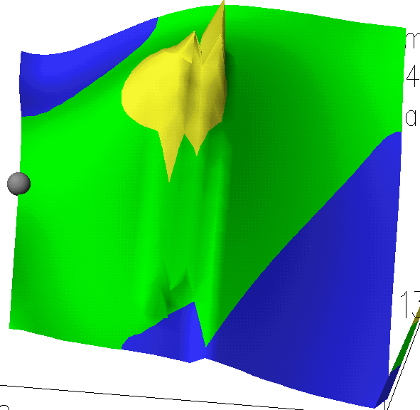
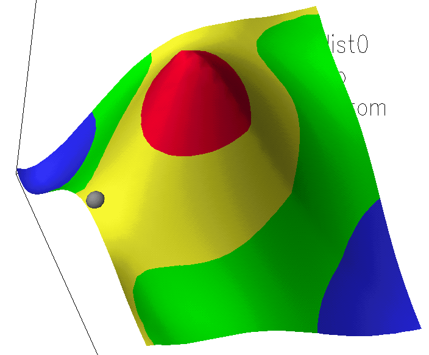

The method used is AM1, although other methods could, of course, be used. The calculations described here do not depend on the method used.
Acetylene and CO form distinct species separated by a
large distance.
The C - C distance is 1.195Angstroms, and the C-O distance is 1.171 Angstroms.
DHf C2H2: +54.78 Kcal/mol;
DHf CO: -5.70 Kcal/mol;
DHf C2H2 + CO:
+48.49 Kcal/mol.
The C -- O distance has increased only slightly to 1.181 Angstroms,
the C=C distance is 1.319 A, and the C -- C distances are 1.405 and 1.983 Angstroms.
DHf: +79.66 Kcal/mol
In -[CH=CH-CO]-, point group C2v, the C=C distance is 1.349A, C-C distance is
1.437 Angstroms and the C-O distance is 1.214 A. DHf
C3H2O: +49.55 Kcal/mol
Use of a GRID to generate the transition state:
The obvious way to find the transition state is to generate the potential energy surface map in which one direction represented the C1 -- CO distance and the other represented theC1 -- CO distance. In this map, the C - C distances are varied from 1.4 to 2.4 A. The resulting map does, indeed, contain a good approximation to the transition state, indicated by the small grey ball in the picture. The spikes in the graphic were caused by hysteresis; these can be eliminated by adding SMOOTH to the keywords, as shown in the second PES figure. At all times, the system is planar, and at large and very small C -- C distances, it is C2v. At intermediate distances, the C=O is in almost a straight line with the shorter C -- C bond. When the two C -- C bonds are equal in length, the C=O is tilted either to one side or the other. If it is tilted one way and the C -- C bonds become unequal, the system will become either the lowest energy conformer, or it will become the higher energy conformer. Distortion out-of-plane involves an increase in energy, and returning to C2v also involves an increase in energy. Therefore there is a barrier between the two conformers. This reaches an extreme in the region of the yellow spikes near the center of the picture.  The reason for the complicated, and obviously incorrect structure, is that the map is asked to represent two contradictory quantities: the lowest energy structure for a given pair of C -- C distances, and the conformer nearest to the previous point. If the latter requirement were removed, then the PES would, indeed be smooth, but with a sharp ridge in the region where the two C -- C distances are equal. This would be the point at which the C=O "flips" from one side to the other.
The files used in these calculation can be found in the ZIP file.